pacman::p_load(tidyverse, tsibble,readxl, feasts, fable, seasonal, ggthemes,knitr, fabletools)Extra_02: Visualising, Analysing and Forecasting Time-series Data: tidyverts methods
1 Learning Outcome
tidyverts is a collection of R packages built for working with time series data (data recorded over time, such as monthly sales, daily temperature, or yearly population). It follows the same design style as the tidyverse, so if users already know packages like dplyr and ggplot2, it will feel familiar.
The tidyverts ecosystem was created by Professor Rob Hyndman from Monash University and his research team. It is meant to replace the previous version and widely used forecast package, using more modern and consistent tools. The project is still actively being improved.
The main learning resource is the book Forecasting: Principles and Practice (3rd Edition) by Hyndman and Athanasopoulos.Studying it alongside practical exercises greatly improved my understanding of the concepts during my final project in the Data Analytics Lab course.
After completing this session, we should learn to:
• import and clean time series data using tidyverse style tools
• explore and visualise patterns in time series data
• build forecasting models using methods such as exponential smoothing and ARIMA
• compare different models and decide which one predicts best
Assumption:
All hypothesis tests in this exercise are conducted at the 5% significance level, where the null hypothesis states that no significant difference or no relationship exists between the variables of interest.
2 Getting Started
2.1 Installing and Loading the Required Libraries
There are 5 packages that will be used in this exercise.
| Package | Description |
|---|---|
| tidyverse | A collection of R packages for data importing, cleaning, transformation, and visualisation (e.g., readr, dplyr, tidyr, ggplot2). |
| tsibble | Provides a data structure for tidy time series data together with tools for data wrangling. |
| knitr | Provides a general-purpose tool for dynamic report generation in R using Literate Programming techniques. |
| feasts | The R package for time series analysis. The name stands for Feature Extraction And Statistics for Time Series. It works with tsibble data and provides tools for feature extraction, decomposition, statistical summaries, and visualisation, and integrates with the tidy forecasting workflow in the fable package. |
| lubridate | A Tidyverse package that handles date-time objects |
| seasonal | An R interface to X 13 ARIMA SEATS, the seasonal adjustment software developed by the US Census Bureau. |
| ggthemes | Provides ‘ggplot2’ themes and scales that replicate some of the famous looks. |
| fable | Provides a collection of commonly used univariate and multivariate time series forecasting models (e.g exponential smoothing and automatic ARIMA), equivalent to forecast package |
| fabletools | Extends fable package that allows users to create ingeratable additonal time series models |
| readxl | Imports excel files into R. |
The code below installs and loads the required packages into R environment.
2.2 Importing the Data
For this hands-on exercise, the visitor_arrivals_by_air.csv file will be used. It contains time series records of visitor arrivals by air across selective countries from 2000 to 2019.
We use read_excel() from the readxl package to import the dataset into the R environment as a tibble named ts_data. We then preview the dataset using kable() and str().
ts_data <- read_excel("data/visitor_arrivals_by_air.xlsx")
kable(head(ts_data), "html")| Month-Year | Republic of South Africa | Canada | USA | Bangladesh | Brunei | China | Hong Kong SAR (China) | India | Indonesia | Japan | South Korea | Kuwait | Malaysia | Myanmar | Pakistan | Philippines | Saudi Arabia | Sri Lanka | Taiwan | Thailand | United Arab Emirates | Vietnam | Belgium & Luxembourg | CIS | Finland | France | Germany | Ireland | Italy | Netherlands | Spain | Switzerland | United Kingdom | Australia | New Zealand |
|---|---|---|---|---|---|---|---|---|---|---|---|---|---|---|---|---|---|---|---|---|---|---|---|---|---|---|---|---|---|---|---|---|---|---|---|
| 2000-01-01 | 3291 | 5545 | 25906 | 2883 | 3749 | 33895 | 13692 | 19235 | 65151 | 59288 | 21457 | 507 | 27472 | 1177 | 2150 | 8404 | 1312 | 3922 | 15766 | 12048 | 1318 | 1527 | 1434 | 2703 | 1634 | 4752 | 12739 | 1292 | 3544 | 4962 | 925 | 3731 | 28986 | 34616 | 5034 |
| 2000-02-01 | 2357 | 6120 | 28262 | 2469 | 3236 | 34344 | 19870 | 18975 | 37105 | 58188 | 19634 | 199 | 29084 | 1161 | 2496 | 9128 | 623 | 3988 | 24861 | 12745 | 899 | 2269 | 1596 | 1182 | 1297 | 6391 | 13093 | 1200 | 2897 | 5054 | 747 | 3980 | 35148 | 26030 | 3938 |
| 2000-03-01 | 4036 | 6255 | 30439 | 2904 | 3342 | 27053 | 17086 | 21049 | 44205 | 74426 | 20719 | 386 | 30504 | 1355 | 2429 | 11691 | 1578 | 4259 | 18767 | 16971 | 1474 | 2034 | 1548 | 1088 | 1220 | 5528 | 13645 | 1368 | 2717 | 4950 | 935 | 3576 | 36117 | 31119 | 4668 |
| 2000-04-01 | 4241 | 4521 | 25378 | 2843 | 5117 | 30464 | 22346 | 26160 | 45480 | 49985 | 17489 | 221 | 34478 | 1593 | 2711 | 14141 | 705 | 6579 | 22735 | 20397 | 1284 | 2420 | 1592 | 1012 | 1208 | 5544 | 13366 | 1345 | 2512 | 4149 | 941 | 3850 | 33792 | 34824 | 6890 |
| 2000-05-01 | 2841 | 3914 | 26163 | 2793 | 4152 | 30775 | 16357 | 35869 | 38350 | 48937 | 19398 | 164 | 34795 | 1397 | 2594 | 13305 | 679 | 4625 | 18399 | 15769 | 1042 | 1833 | 1167 | 660 | 743 | 4225 | 10878 | 1067 | 2205 | 3643 | 764 | 3025 | 23377 | 33139 | 7006 |
| 2000-06-01 | 2776 | 3487 | 28179 | 3146 | 5018 | 26720 | 18133 | 31314 | 47982 | 53798 | 17522 | 440 | 34660 | 1715 | 2924 | 10555 | 2749 | 4740 | 21042 | 17217 | 1545 | 2480 | 1170 | 712 | 982 | 4047 | 9054 | 1363 | 2196 | 3544 | 855 | 2580 | 21769 | 35731 | 7634 |
The dataset contains 2 types of data: visit counts across 35 countries, and one “Month-Year” column in POSIXct format.
str(ts_data)tibble [240 × 36] (S3: tbl_df/tbl/data.frame)
$ Month-Year : POSIXct[1:240], format: "2000-01-01" "2000-02-01" ...
$ Republic of South Africa: num [1:240] 3291 2357 4036 4241 2841 ...
$ Canada : num [1:240] 5545 6120 6255 4521 3914 ...
$ USA : num [1:240] 25906 28262 30439 25378 26163 ...
$ Bangladesh : num [1:240] 2883 2469 2904 2843 2793 ...
$ Brunei : num [1:240] 3749 3236 3342 5117 4152 ...
$ China : num [1:240] 33895 34344 27053 30464 30775 ...
$ Hong Kong SAR (China) : num [1:240] 13692 19870 17086 22346 16357 ...
$ India : num [1:240] 19235 18975 21049 26160 35869 ...
$ Indonesia : num [1:240] 65151 37105 44205 45480 38350 ...
$ Japan : num [1:240] 59288 58188 74426 49985 48937 ...
$ South Korea : num [1:240] 21457 19634 20719 17489 19398 ...
$ Kuwait : num [1:240] 507 199 386 221 164 ...
$ Malaysia : num [1:240] 27472 29084 30504 34478 34795 ...
$ Myanmar : num [1:240] 1177 1161 1355 1593 1397 ...
$ Pakistan : num [1:240] 2150 2496 2429 2711 2594 ...
$ Philippines : num [1:240] 8404 9128 11691 14141 13305 ...
$ Saudi Arabia : num [1:240] 1312 623 1578 705 679 ...
$ Sri Lanka : num [1:240] 3922 3988 4259 6579 4625 ...
$ Taiwan : num [1:240] 15766 24861 18767 22735 18399 ...
$ Thailand : num [1:240] 12048 12745 16971 20397 15769 ...
$ United Arab Emirates : num [1:240] 1318 899 1474 1284 1042 ...
$ Vietnam : num [1:240] 1527 2269 2034 2420 1833 ...
$ Belgium & Luxembourg : num [1:240] 1434 1596 1548 1592 1167 ...
$ CIS : num [1:240] 2703 1182 1088 1012 660 ...
$ Finland : num [1:240] 1634 1297 1220 1208 743 ...
$ France : num [1:240] 4752 6391 5528 5544 4225 ...
$ Germany : num [1:240] 12739 13093 13645 13366 10878 ...
$ Ireland : num [1:240] 1292 1200 1368 1345 1067 ...
$ Italy : num [1:240] 3544 2897 2717 2512 2205 ...
$ Netherlands : num [1:240] 4962 5054 4950 4149 3643 ...
$ Spain : num [1:240] 925 747 935 941 764 ...
$ Switzerland : num [1:240] 3731 3980 3576 3850 3025 ...
$ United Kingdom : num [1:240] 28986 35148 36117 33792 23377 ...
$ Australia : num [1:240] 34616 26030 31119 34824 33139 ...
$ New Zealand : num [1:240] 5034 3938 4668 6890 7006 ...We convert the “Month-Year” variable to Date class to ensure consistency, as POSIXct objects internally store date and time values, even when only the date component is displayed.
ts_data$`Month-Year` <- ymd(ts_data$`Month-Year`)class(ts_data$`Month-Year`)[1] "Date"
2.3 Conventional Base ts Object versus tibble Object
The ts_data table is currently a tibble. We convert it to a tsibble to define a proper time index and enable time series analysis using tidyverts functions (for example, modelling in fable and feature extraction in feasts).
It is important to note that ts() creates a base R time series object and is primarily used with the forecast package. It does not integrate with the tidyverts workflow, which requires a tsibble object instead.
class(ts_data)[1] "tbl_df" "tbl" "data.frame"glimpse(ts_data_ts) Time-Series [1:240, 1:36] from 1 to 240: 10957 10988 11017 11048 11078 ...
- attr(*, "dimnames")=List of 2
..$ : NULL
..$ : chr [1:36] "Month-Year" "Republic of South Africa" "Canada" "USA" ...In a ts object, dates are not stored directly but inferred from an internal time index. As a result, time points have no row names, and the “Month-Year” information is represented numerically rather than as an actual date column.
2.4 Converting tibble Object to tsibble Object
A tsibble is an extension of a tibble designed for time series data. Unlike traditional R time series objects such as ts, zoo, and xts, it keeps the time variable as a normal column and allows multiple series to be stored in one table.
It also uses a key (one or more variables) to identify each series across time.
The code chunk below converts ts_data from a tibble into a tsibble using the as_tsibble() function from the tsibble package.
ts_tsibble <- ts_data %>%
mutate(`Year-Month` = yearmonth(`Month-Year`)) %>%
relocate(`Year-Month`, .before = 1) %>%
select(-`Month-Year`) %>%
as_tsibble(index = `Year-Month`)
Tip
mutate()from the dplyr package is used to create a new variable by transforming the values in the “Month-Year” column into a proper month year format. This conversion is done usingyearmonth()from the tsibble package.as_tsibbleis then used to convert thetibbledata.frameinto atsibbleby defining the time index so we can use it for time series analysis.
ts_tsibble# A tsibble: 240 x 36 [1M]
`Year-Month` `Republic of South Africa` Canada USA Bangladesh Brunei China
<mth> <dbl> <dbl> <dbl> <dbl> <dbl> <dbl>
1 2000 Jan 3291 5545 25906 2883 3749 33895
2 2000 Feb 2357 6120 28262 2469 3236 34344
3 2000 Mar 4036 6255 30439 2904 3342 27053
4 2000 Apr 4241 4521 25378 2843 5117 30464
5 2000 May 2841 3914 26163 2793 4152 30775
6 2000 Jun 2776 3487 28179 3146 5018 26720
7 2000 Jul 3728 4238 29193 3489 5026 31108
8 2000 Aug 2545 4378 27033 3070 6074 32594
9 2000 Sept 2819 3517 24802 2826 4165 26981
10 2000 Oct 3274 4860 28789 3040 3650 26944
# ℹ 230 more rows
# ℹ 29 more variables: `Hong Kong SAR (China)` <dbl>, India <dbl>,
# Indonesia <dbl>, Japan <dbl>, `South Korea` <dbl>, Kuwait <dbl>,
# Malaysia <dbl>, Myanmar <dbl>, Pakistan <dbl>, Philippines <dbl>,
# `Saudi Arabia` <dbl>, `Sri Lanka` <dbl>, Taiwan <dbl>, Thailand <dbl>,
# `United Arab Emirates` <dbl>, Vietnam <dbl>, `Belgium & Luxembourg` <dbl>,
# CIS <dbl>, Finland <dbl>, France <dbl>, Germany <dbl>, Ireland <dbl>, …class(ts_tsibble$`Year-Month`)[1] "yearmonth" "vctrs_vctr"is_yearmonth(ts_tsibble$`Year-Month`)[1] TRUEA new Month-Year variable is derived from the original Month-Year field and converted into a yearmonth object, allowing it to serve as the time index for the tsibble.
3 Visualising Time-series Data
The original dataset is a very wide table containing many columns, each representing a different country. To perform time series analysis, the data is reshaped from wide to long format using a pivot operation. Each row now represents a country, a specific time point, and the corresponding vistor arrival count.
ts_longer <- ts_data %>%
pivot_longer(cols = c(2:36),
names_to = "Country",
values_to = "Arrival")3.1 Visualising Single Time-series: ggplot2 Methods
The filter() function from dplyr is used to extract observations for Vietam from the long format dataset. The resulting data is visualised with ggplot2 using a line chart geom_line() to show how visitor arrivals change over time. High arrivals every July every year.
ts_longer %>%
filter(Country == "Vietnam") %>%
ggplot(aes(x = `Month-Year`, y = `Arrival`)) +
geom_line(linewidth = 0.5)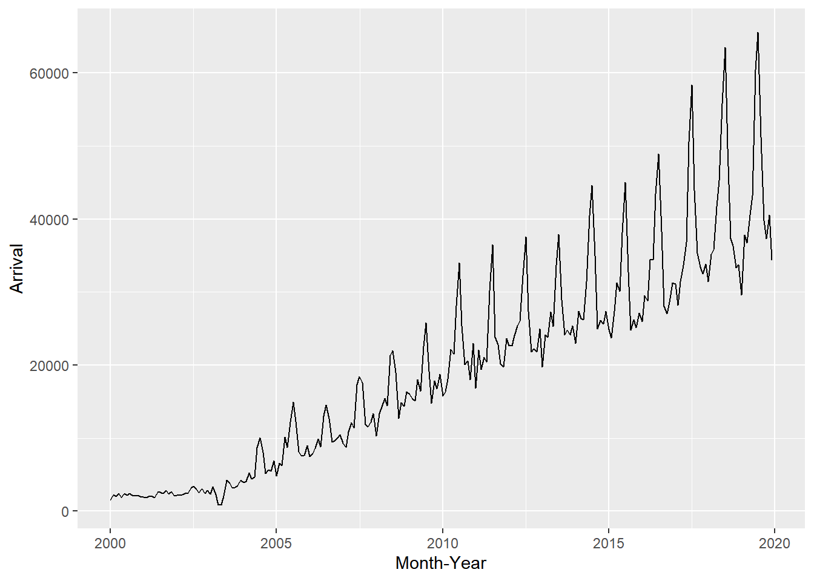
3.2 Plotting Multiple Time-series Data with ggplot2 Methods
The code below produces a multiple line chart showing monthly visitor arrivals over time for different countries. Each coloured line represents the trend for one country.
The legend is enabled and positioned at the bottom of the chart for clearer presentation.
ggplot(data = ts_longer, aes(x = `Month-Year`, y = Arrival, color = Country)) +
geom_line(linewidth = 0.5) +
theme(legend.position = "bottom", legend.box.spacing = unit(0.5, "cm"))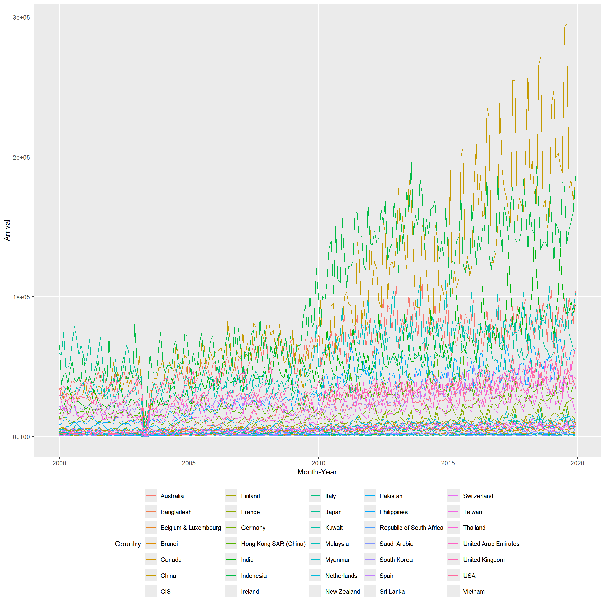
The code creates a set of line charts showing monthly visitor arrivals over time for each country. The facet_wrap() function separates the plot into small panels by country, with five panels per row to present the data neatly. The scales = "free_y" option allows each country to have its own vertical scale so patterns are easier to see. The theme_bw() function applies a clean black and white theme for better readability.
ggplot(ts_longer, aes(x=`Month-Year`, y = Arrival)) +
geom_line(linewidth = 0.5) +
facet_wrap(~Country, ncol = 5, scales = "free_y") +
theme_bw()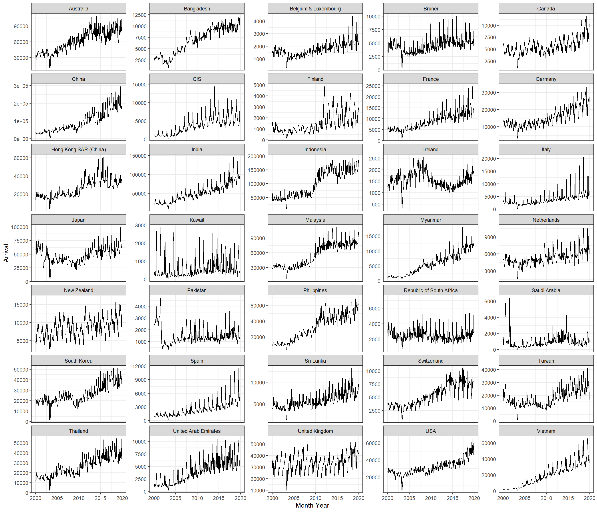
4 Visual Analysis of Time-series Data
Seasonality refers to a pattern that repeats a regular intervals such as monthly or yearly cycles. These repeating movements can influence a time series, and if not account for, may introduce noise that affects model fitting and forecasting accuracy. In this session we learn how to detect seasonality in time series data using functions from the feasts package. Before applying these functions, the data set needs to be organised into suitable structure. Specifically we prepare the data as a tsibble which is required data format for tidyverts tools. Because tidyvertsfollows tidyverse style conventions, we can use tidyr function such as pivot_longer() to reshape data into long format before converting it into a tsibble for analysis.
tsibble_longer <- ts_tsibble %>%
pivot_longer(-`Year-Month`, names_to = "Country", values_to = "Arrivals")4.1 Visual Analysis of Seasonality with Seasonal Plot
A seasonal plot is similar to a time plot, but the observations are arranged by season (for example, month) rather than chronological order. This helps reveal repeating patterns within each year. The plot is created using the gg_season() function from the feasts package. In this example, the data for Italy, Vietnam, the United Kingdom, and Germany are selected to compare their seasonal visitor arrival patterns. Visitor arrivals from Germany and the United Kingdom tend to peak in March, while Italy peaks in August and Vietnam peaks in July annually.
tsibble_longer%>%
filter(Country == "Italy" | Country == "Vietnam" | Country == "United Kingdom"| Country == "Germany")%>%
gg_season(Arrivals)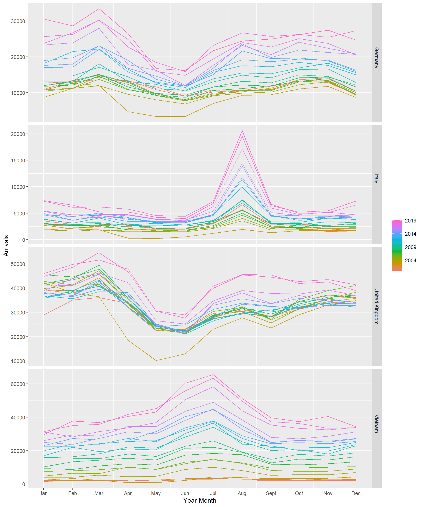
Here we create time plot chart using autoplot() from tidyverts.
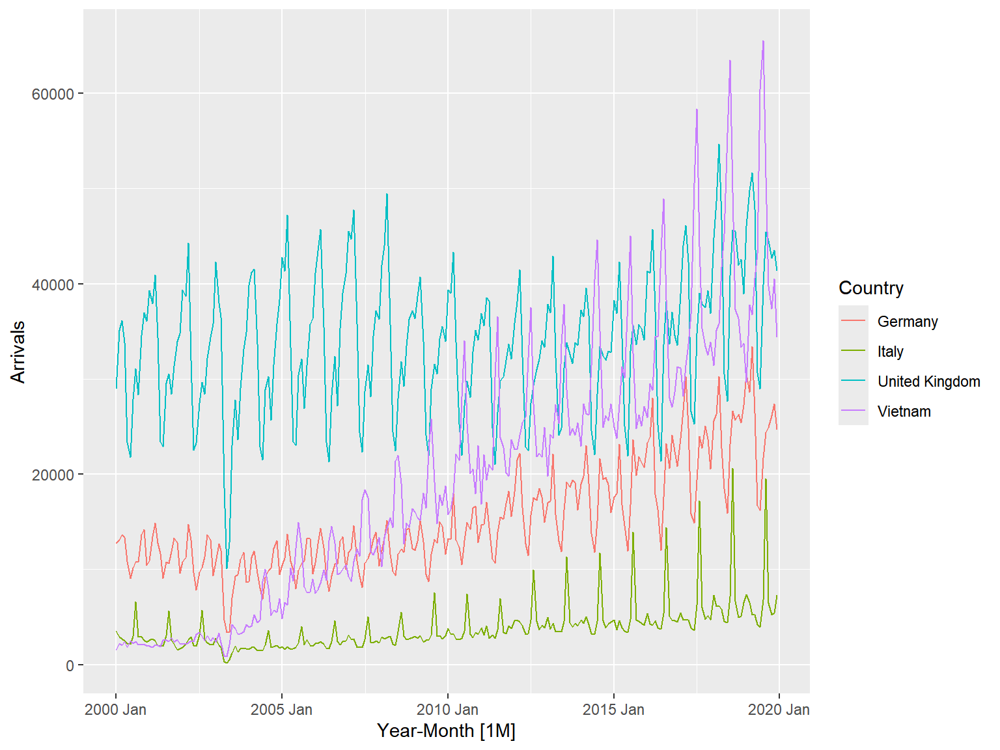
We can also achieve the similar charts using ggplot2.
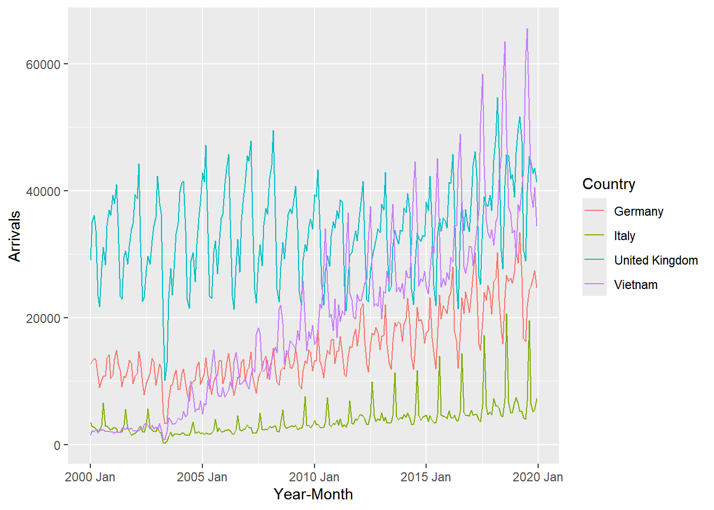
The gg_subseries() function from the feasts package is used to visualise monthly visitor arrivals. The plot groups observations by month and hows how arrivals in each month vary across different years. In this example, data for Vietnam and Italy are selected for comparison.
tsibble_longer %>%
filter(Country == "Vietnam" |
Country == "Italy") %>%
gg_subseries(Arrivals)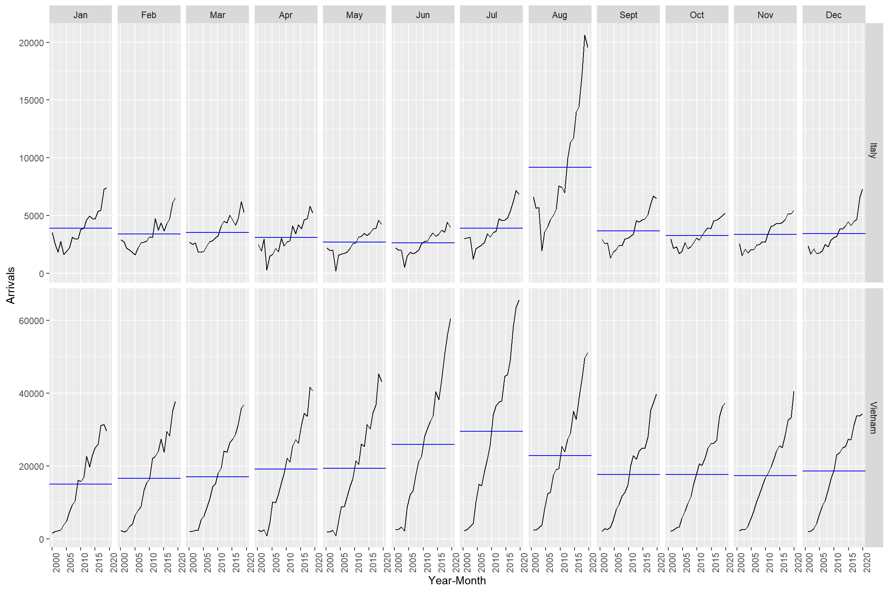
5 Time Series Decomposition
Time series decomposition allows us to isolate structural components such as trend and seasonality from the time-series data.
- Trend shows the long term direction (for example, tourism gradually increasing over years)
- Seasonality shows predictable cycles (for example, peaks during holidays or summer months)
- Remainder/noise shows irregular random variation
If we don’t isolate them seasonal peak might be mistaken for real growth, random noise may destroy distort modern fitting, forecasting models may over or under predict. So isolating these components helps us interpret the behaviour series more clearly and improve forecasting accuracy.
In ARIMA modelling: - AR (autoregressive) terms (p) are identified using the PACF. - MA (moving average) terms (q) are identified using the ACF. - d represents the number of non seasonal differences required to remove the trend; the first difference measures the change from one month to the next.
-For seasonal time series, we include both non seasonal (p, d, q) and seasonal (P, D, Q) components in the model.

5.1 Single Time Series Decomposition
In feasts package, time series decomposition is supported by (Partial) Autocorrelation and Cross-Correlation Function Estimation ACF(), PACF(), CCF(), Autocorrelation-based features feat_acf(), and Autocorrelation-based features feat_pacf(). The output can then be plotted by using autoplot() of feasts package.
In the code chunk below, ACF() and PACF() of feasts package is used to plot the ACF and PACF curve of visitor arrival from Vietnam.
tsibble_longer %>%
filter(`Country` == "Vietnam") %>%
ACF(Arrivals) %>%
autoplot()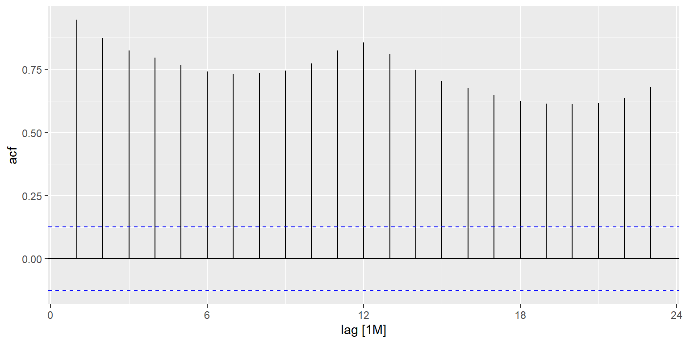
tsibble_longer %>%
filter(`Country` == "Vietnam") %>%
PACF(Arrivals) %>%
autoplot()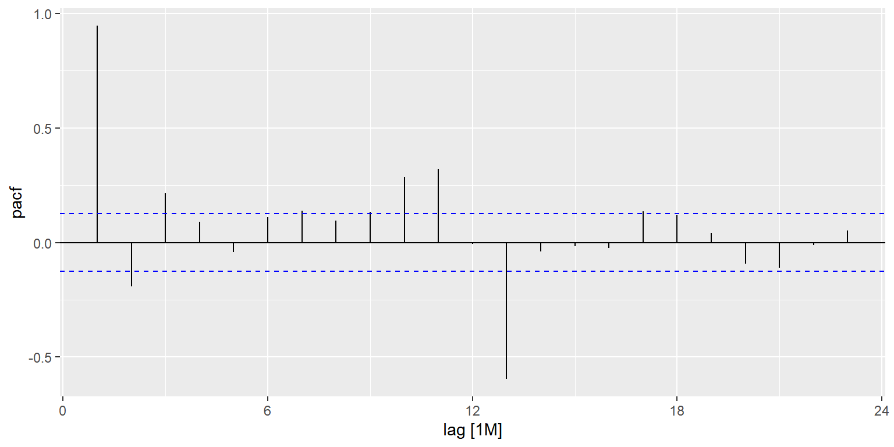
feat_acf() and feat_pacf() provide summary statistics of autocorrelation and partial autocorrelation.
The Vietnam visitor arrival series exhibits strong persistence and clear annual seasonality. The high lag 1 autocorrelation indicates non stationarity, while first differencing substantially reduces dependence, suggesting a first order difference is sufficient. The strong seasonal autocorrelation confirms repeating yearly patterns, which should be incorporated into the forecasting model (for example, seasonal ARIMA).
While feat_acf tells about overall dependence, PACF helps identify the AR (autoregressive) behaviour of the series.The very high PACF5 value indicates strong autoregressive behaviour,that current arrivals depend directly on recent past arrivals.After first differencing, the PACF remains strong but stabilised. This supports ARIMA(p,1,q) rather than a simple random walk.season_pacf measures direct dependence with the same month last year. PACF shows no direct seasonal lag relationship while ACF showed strong seasonality.
tsibble_longer %>%
filter(Country == "Vietnam") %>%
features(Arrivals, feat_acf)# A tibble: 1 × 8
Country acf1 acf10 diff1_acf1 diff1_acf10 diff2_acf1 diff2_acf10 season_acf1
<chr> <dbl> <dbl> <dbl> <dbl> <dbl> <dbl> <dbl>
1 Vietnam 0.945 6.33 0.161 0.252 -0.261 0.265 0.856tsibble_longer %>%
filter(Country == "Vietnam") %>%
features(Arrivals, feat_pacf)# A tibble: 1 × 5
Country pacf5 diff1_pacf5 diff2_pacf5 season_pacf
<chr> <dbl> <dbl> <dbl> <dbl>
1 Vietnam 0.986 1.03 1.07 -0.00563Cross-correlation CCF() compares data for Germany with United Kingdom.
autoplot() visualises the CCF() results and we save the summary statistics in a tbl_cf caled ccf_germany_uk.
tsibble_longer %>%
filter(Country == "Germany"| Country == "United Kingdom") %>%
select(`Year-Month`, Country, Arrivals) %>%
pivot_wider(names_from = Country, values_from = Arrivals) %>%
CCF(Germany,`United Kingdom`) %>%
autoplot()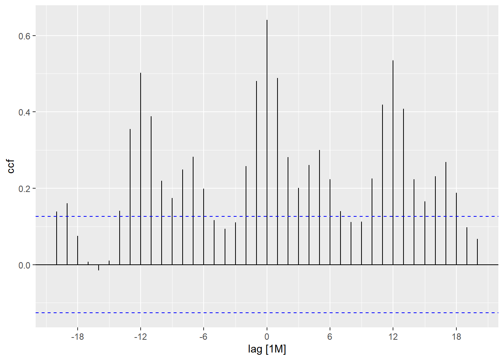
ccf_germany_uk <- tsibble_longer %>%
filter(Country == "Germany"| Country == "United Kingdom") %>%
select(`Year-Month`, Country, Arrivals) %>%
pivot_wider(names_from = Country, values_from = Arrivals) %>%
CCF(Germany,`United Kingdom`)Lag 0M = 0.64: Germany and United Kingdom visitor arrivals have a strong positive correlation in the same month.
Lag 12M = 0.535: Germany this month is positively correlated with UK arrivals 12 months later.
Lag −12M = 0.502: UK this month is positively correlated with Germany arrivals 12 months later.
# A tsibble: 1 x 2 [1M]
lag ccf
<cf_lag> <dbl>
1 0M 0.641# correlation at lag 0 (same month)
ccf_germany_uk %>%
filter(lag == 0)# A tsibble: 1 x 2 [1M]
lag ccf
<cf_lag> <dbl>
1 0M 0.641# check yearly seasonality
ccf_germany_uk %>%
filter(lag == 12 | lag == -12)# A tsibble: 2 x 2 [1M]
lag ccf
<cf_lag> <dbl>
1 -12M 0.502
2 12M 0.5355.2 Multiple Time-series Decomposition
The code chunk below are used to prepare a trellis plot of ACFs & PACFs for visitor arrivals from Vietnam, Italy, United Kingdom and China.
tsibble_longer %>%
filter(`Country` == "Vietnam" |
`Country` == "Italy" |
`Country` == "United Kingdom" |
`Country` == "China") %>%
ACF(Arrivals) %>%
autoplot()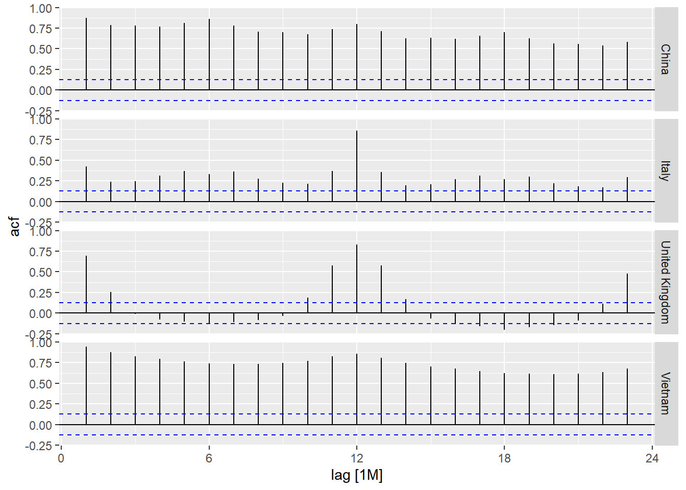
tsibble_longer %>%
filter(`Country` == "Vietnam" |
`Country` == "Italy" |
`Country` == "United Kingdom" |
`Country` == "China") %>%
PACF(Arrivals) %>%
autoplot()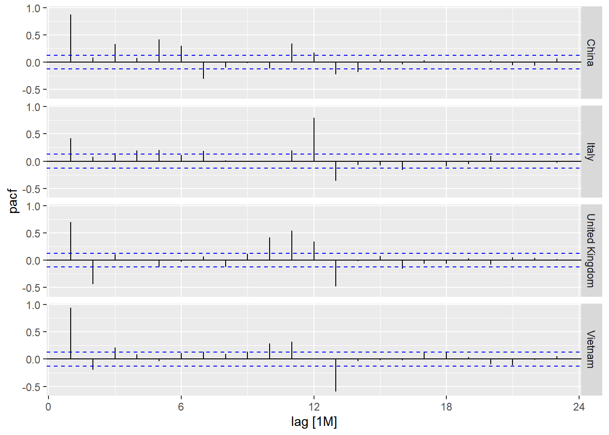
5.3 Composite Plot of Time Series Decomposition (VERY Convenient)
One useful function in the feasts package for time series analysis is gg_tsdisplay(). It produces a composite display with the original time series plot in the top panel, the ACF plot in the bottom left panel, and a seasonal plot in the bottom right panel.
tsibble_longer %>%
filter(`Country` == "Vietnam") %>%
gg_tsdisplay(Arrivals)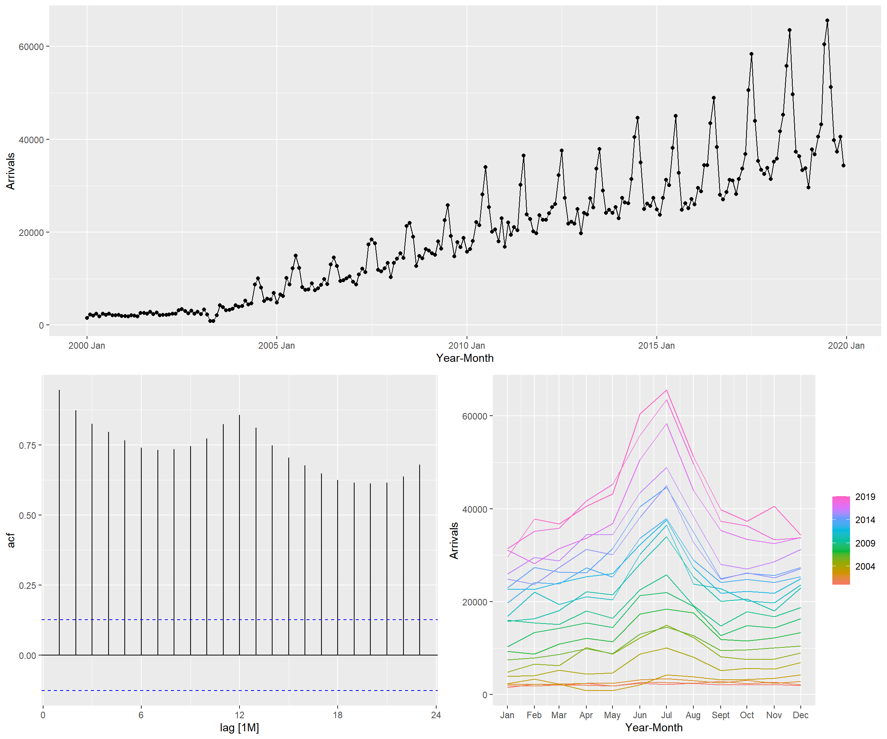
6 Visual STL Diagnostics
STL (Seasonal and Trend decomposition using Loess) is a time series decomposition method developed by Cleveland et al. (1990). It uses LOESS smoothing (locally weighted regression) to separate a time series into three components: trend, seasonal, and remainder (irregular noise).
The algorithm works iteratively. In the inner loop, it estimates the seasonal component and then the trend component. In the outer loop, it reduces the influence of outliers. The remainder is obtained after removing both the trend and seasonal parts from the original series.
Advantages of STL:
Works with any seasonal frequency, not only monthly or quarterly data
Seasonal patterns can change over time
Trend smoothness can be controlled by the user
Robust to outliers, which mainly affect only the remainder component
6.1 Visual STL Diagnostics with feasts
In the code chunk below, STL() of feasts package is used to decomposite visitor arrivals from Vietnam data.
tsibble_longer %>%
filter(`Country` == "Vietnam") %>%
model(stl = STL(Arrivals)) %>%
components() %>%
autoplot()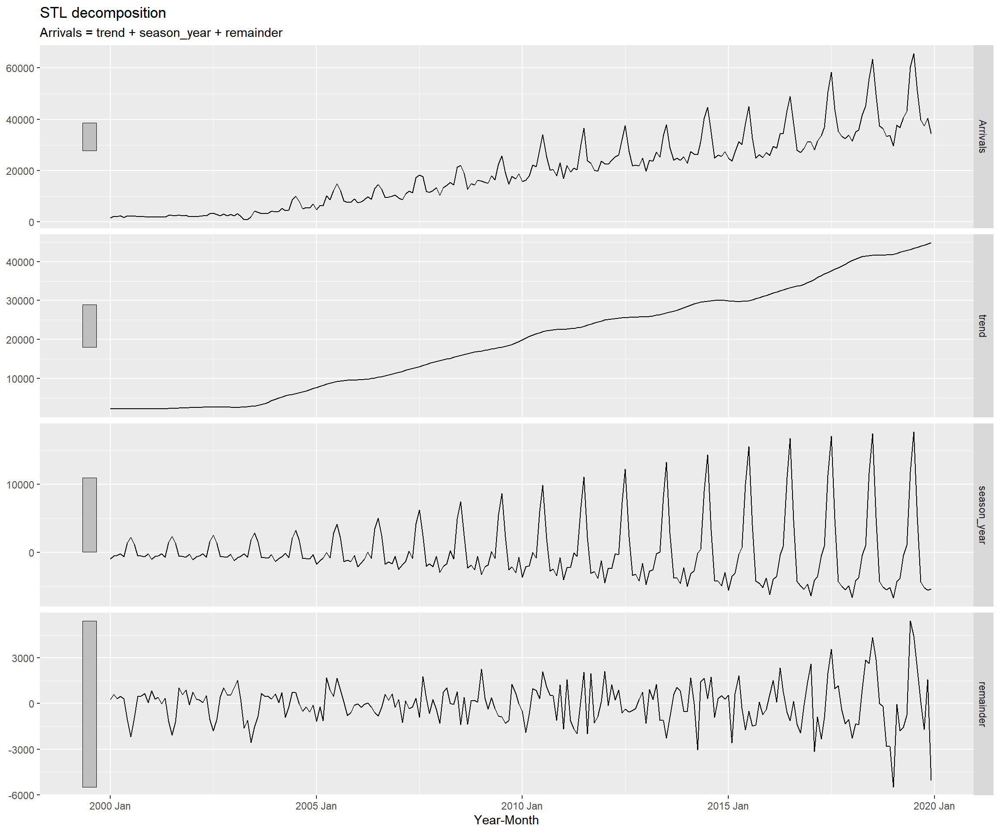
The grey bars on the left of each panel help compare how much variation each component has. The bars are drawn with the same length, but they appear different sizes because each panel uses a different scale. The large grey bar in the bottom panel indicates that the remainder component varies much less than the original data. If all panels were shown on the same scale, the bottom three panels would appear much smaller than the data panel. It means most of the movement in the time series comes from the trend and seasonal patterns, not from random noise.
6.2 Classical Decomposition with feasts
In the code chunk below, classical_decomposition() from the feasts package is used to decompose the time series into seasonal, trend, and irregular components using moving averages. The method supports both additive and multiplicative seasonality. In an additive model, the seasonal effect is constant over time, while in a multiplicative model the seasonal effect changes in proportion to the level of the series.
Classical decomposition assumes the seasonal pattern is fixed (for example, January behaves similarly every year) and works best when the seasonal cycle is stable. However, it is sensitive to outliers and missing values. For instance, the warning “Removed 24 rows containing missing values or values outside the scale range (geom_line())” occurs because the moving average calculation cannot be computed at the beginning and end of the series, resulting in missing observations in the decomposition plot.
STL is more accurate and robust and compatible with ARIMA/ETS modelling workflows.
tsibble_longer %>%
filter(`Country` == "Vietnam") %>%
model(
classical_decomposition(
Arrivals, type = "additive")) %>%
components() %>%
autoplot()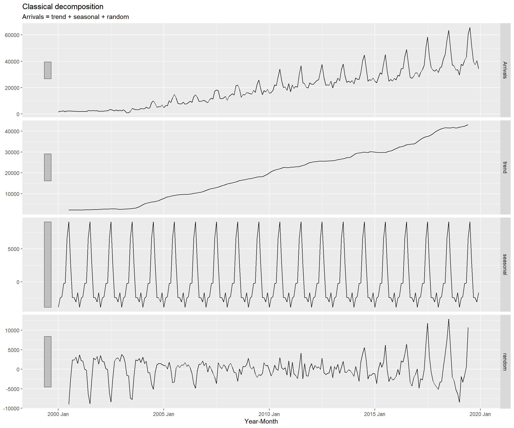
7 Visual Forecasting
In this section, we learn how to use fable and fabletools from tidyverts family to build the forecasting models.
Here is the workflow:
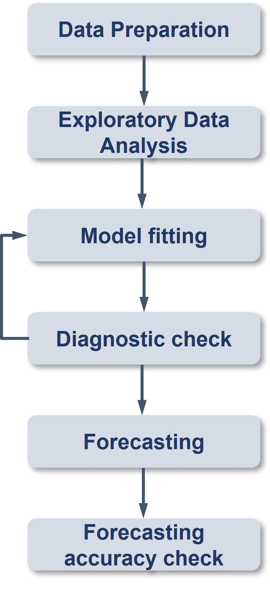
7.1 Time Series Data Sampling
In forecasting, it is standard practice to divide the dataset into a training set and a hold out set. The training set (estimation sample) is used to fit the model and estimate its parameters, and usually includes about 75 to 80 percent of the observations, although a smaller share may be used for longer series.
The remaining observations form the hold out set, which is reserved for evaluating forecast performance. After the model is fitted on the training data, its forecasts are compared with these unseen observations to assess how well it predicts new values.
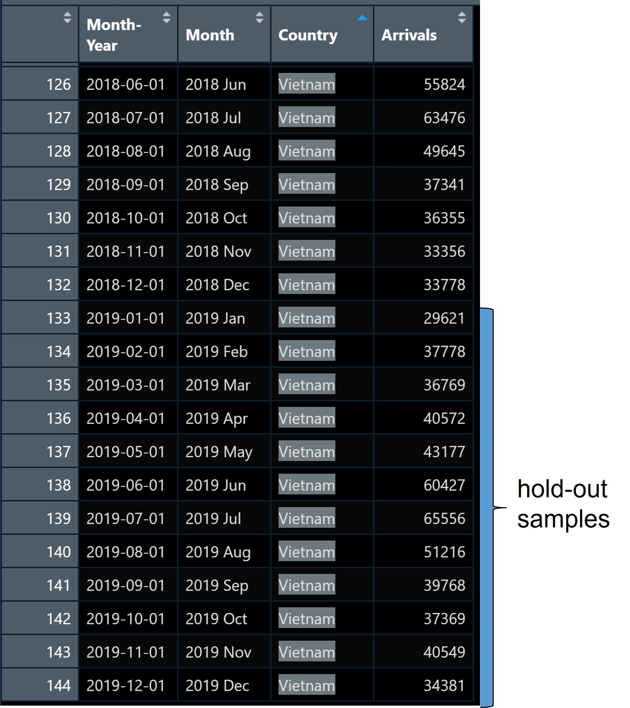
In this example, the last 12 months of observations are reserved as the hold out sample, while the remaining data are used for training.
First, an additional column named Type is created using the mutate() function from the dplyr package to label each observation as either training or hold out. This will be useful for subsequent data visualisation.
vietnam_ts <- tsibble_longer %>%
filter(Country == "Vietnam") %>%
mutate(Type = if_else(`Year-Month`>= yearmonth("2019 Jan"), "Hold-out", "Training"))Next, a training data set is extracted from the original data set by using filter() of dplyr package.
vietnam_train <- vietnam_ts %>%
filter(`Year-Month` < yearmonth("2019 Jan"))7.2 Exploratory Data Analysis (EDA): Time Series Data
Before fitting forecasting models, it is a good practice to analysis the time series data by using EDA methods. The season_year plot reveals a seasonal pattern that repeats every 12 months with consistent peaks and troughs occurring at the same months each year. This indicates strong annual seasonality in visitor arrivals. Arrivals looks messy because trend and seasonality mixed together. Trend shows long term growth in tourism. Remainder part is small.
vietnam_train %>%
model(stl = STL(Arrivals)) %>%
components() %>%
autoplot()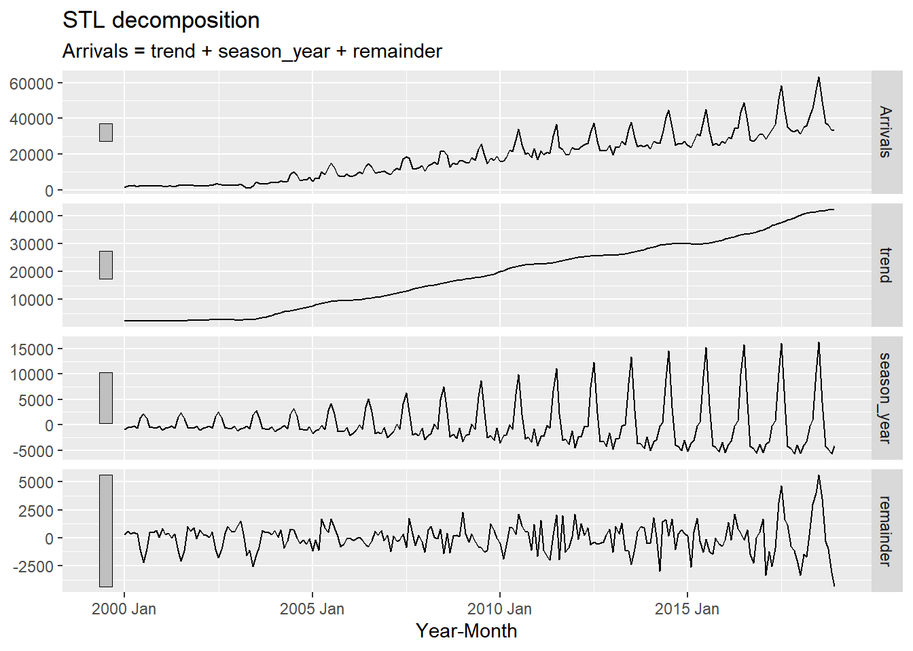
7.3 Fitting Forecasting Models
7.3.1 Fitting Exponential Smoothing State Space (ETS) Models: fable methods
In fable, ETS() is used to build Exponential Smoothing State Space Models. The sample formula is below:
ETS(y ~ error(c("A", "M"))
+ trend(c("N", "A", "Ad"))
+ season(c("N", "A", "M")) 7.3.2 Fitting a simple exponential smoothing (SES)
SES assumes upward trend and strong yearly seasonality neither exists. This model is intentionally a very simple baseline model as naive/simple benchmark for comparison.
fit_ses <- vietnam_train %>%
model(ETS(Arrivals ~ error("A") # error("A") Additive errors
+ trend("N") #trend("N") No trend
+ season("N"))) # season("N") No seasonality
fit_ses# A mable: 1 x 2
# Key: Country [1]
Country `ETS(Arrivals ~ error("A") + trend("N") + season("N"))`
<chr> <model>
1 Vietnam <ETS(A,N,N)>7.3.3 Examine Model Assumptions
gg_tsresiduals() from feasts package is used to check the model assumptions with residuals plots.
gg_tsresiduals(fit_ses)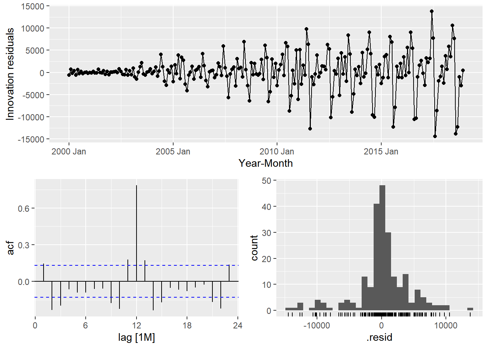
7.3.4 The model Details
We use report() of fabletools reveal the model details.
fit_ses%>% report()Series: Arrivals
Model: ETS(A,N,N)
Smoothing parameters:
alpha = 0.9998999
Initial states:
l[0]
2142.237
sigma^2: 17184236
AIC AICc BIC
5040.249 5040.356 5050.537 7.4 Fitting ETS Methods with Trend: Holt’s Linear
7.4.0.1 Trend methods
vietnam_H <- vietnam_train %>%
model(`Holt's method` =
ETS(Arrivals ~ error("A") +
trend("A") +
season("N")))
vietnam_H %>% report()Series: Arrivals
Model: ETS(A,A,N)
Smoothing parameters:
alpha = 0.9998999
beta = 0.0001000235
Initial states:
l[0] b[0]
1999.921 37.64938
sigma^2: 17329230
AIC AICc BIC
5044.138 5044.408 5061.284 7.4.1 Damped trend methods
vietnam_HAd <- vietnam_train %>%
model(`Holt's method` =
ETS(Arrivals ~ error("A") +
trend("Ad") +
season("N")))
vietnam_HAd %>% report()Series: Arrivals
Model: ETS(A,Ad,N)
Smoothing parameters:
alpha = 0.9998998
beta = 0.0001001135
phi = 0.9324906
Initial states:
l[0] b[0]
1969.945 37.13925
sigma^2: 17415816
AIC AICc BIC
5046.254 5046.634 5066.830 7.4.2 Checking for results
Check the model assumptions with residuals plots.
gg_tsresiduals(vietnam_H)gg_tsresiduals(vietnam_HAd)7.5 Fitting ETS Methods with Season: Holt-Winters
Vietnam_WH <- vietnam_train %>%
model(
Additive = ETS(Arrivals ~ error("A")
+ trend("A")
+ season("A")),
Multiplicative = ETS(Arrivals ~ error("M")
+ trend("A")
+ season("M"))
)
Vietnam_WH %>% report()# A tibble: 2 × 10
Country .model sigma2 log_lik AIC AICc BIC MSE AMSE MAE
<chr> <chr> <dbl> <dbl> <dbl> <dbl> <dbl> <dbl> <dbl> <dbl>
1 Vietnam Additive 7.39e+6 -2414. 4861. 4864. 4919. 6.87e6 1.38e7 1.92e+3
2 Vietnam Multiplicative 2.03e-2 -2316. 4666. 4669. 4724. 2.56e6 3.21e6 9.23e-27.6 Fitting multiple ETS Models
fit_ETS <- vietnam_train %>%
model(`SES` = ETS(Arrivals ~ error("A") +
trend("N") +
season("N")),
`Holt`= ETS(Arrivals ~ error("A") +
trend("A") +
season("N")),
`damped Holt` =
ETS(Arrivals ~ error("A") +
trend("Ad") +
season("N")),
`WH_A` = ETS(
Arrivals ~ error("A") +
trend("A") +
season("A")),
`WH_M` = ETS(Arrivals ~ error("M")
+ trend("A")
+ season("M"))
)7.7 The model Coefficient
tidy() of fabletools is be used to extract model coefficients from a mable.
fit_ETS %>%
tidy()# A tibble: 45 × 4
Country .model term estimate
<chr> <chr> <chr> <dbl>
1 Vietnam SES alpha 1.000
2 Vietnam SES l[0] 2142.
3 Vietnam Holt alpha 1.000
4 Vietnam Holt beta 0.000100
5 Vietnam Holt l[0] 2000.
6 Vietnam Holt b[0] 37.6
7 Vietnam damped Holt alpha 1.000
8 Vietnam damped Holt beta 0.000100
9 Vietnam damped Holt phi 0.932
10 Vietnam damped Holt l[0] 1970.
# ℹ 35 more rows7.8 Step 4: Model Comparison
glance() of fabletool
fit_ETS %>%
glance()# A tibble: 5 × 10
Country .model sigma2 log_lik AIC AICc BIC MSE AMSE MAE
<chr> <chr> <dbl> <dbl> <dbl> <dbl> <dbl> <dbl> <dbl> <dbl>
1 Vietnam SES 1.72e+7 -2517. 5040. 5040. 5051. 1.70e7 3.66e7 2.71e+3
2 Vietnam Holt 1.73e+7 -2517. 5044. 5044. 5061. 1.70e7 3.66e7 2.70e+3
3 Vietnam damped Holt 1.74e+7 -2517. 5046. 5047. 5067. 1.70e7 3.66e7 2.71e+3
4 Vietnam WH_A 7.39e+6 -2414. 4861. 4864. 4919. 6.87e6 1.38e7 1.92e+3
5 Vietnam WH_M 2.03e-2 -2316. 4666. 4669. 4724. 2.56e6 3.21e6 9.23e-27.9 Step 5: Forecasting Future Values
To forecast the future values, forecast() of fable will be used. Notice that the forecast period is 12 months.
fit_ETS %>%
forecast(h = "12 months") %>%
autoplot(vietnam_ts,
level = NULL)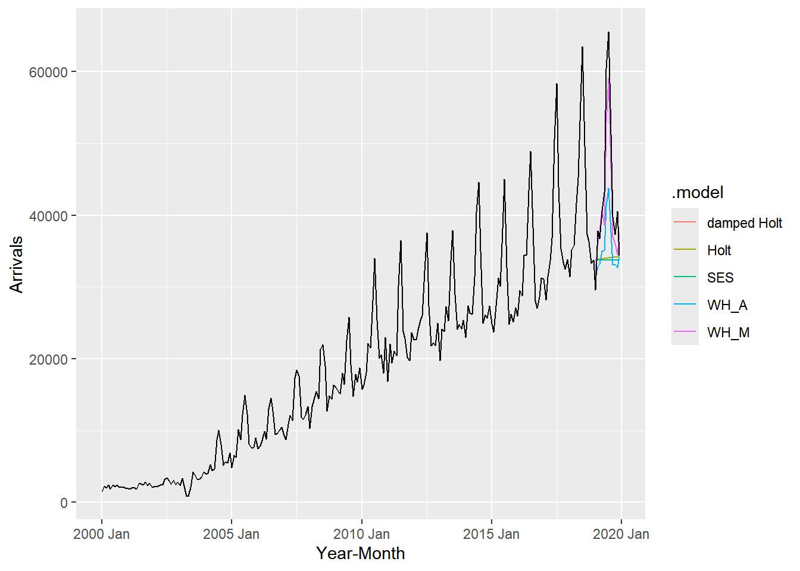
7.10 Fitting ETS Automatically
fit_autoETS <- vietnam_train %>%
model(ETS(Arrivals))
fit_autoETS %>% report()Series: Arrivals
Model: ETS(M,A,M)
Smoothing parameters:
alpha = 0.2876103
beta = 0.0001077007
gamma = 0.0007450998
Initial states:
l[0] b[0] s[0] s[-1] s[-2] s[-3] s[-4] s[-5]
2037.892 59.59662 0.9126985 0.8398613 0.8785366 0.9057731 1.137611 1.448885
s[-6] s[-7] s[-8] s[-9] s[-10] s[-11]
1.297657 0.9514804 1.003835 0.9317896 0.8947858 0.7970882
sigma^2: 0.0203
AIC AICc BIC
4665.719 4668.633 4724.018 7.11 Fitting Fitting ETS Automatically
Next, we will check the model assumptions with residuals plots by using gg_tsresiduals() of feasts package
gg_tsresiduals(fit_autoETS)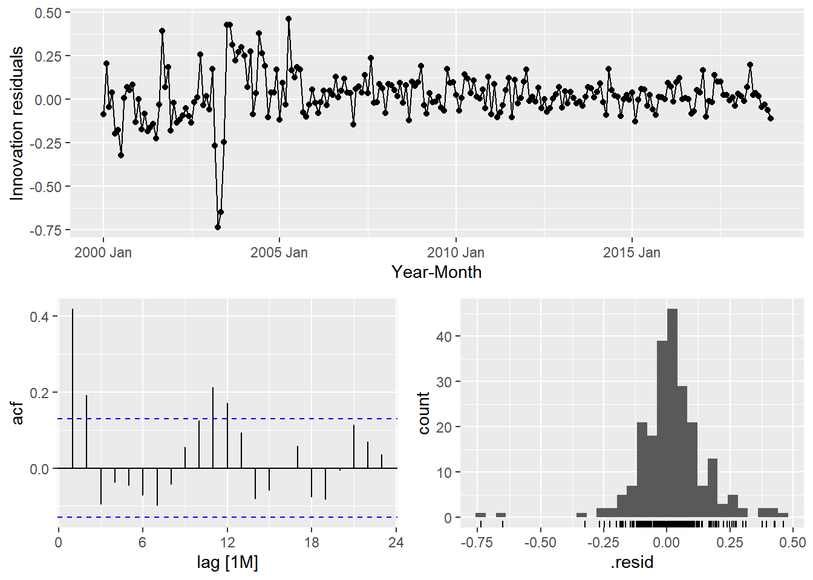
7.12 Forecast the Future Values
In the code chunk below, forecast() of fable package is used to forecast the future values. Then, autoplot() of feasts package is used to see the training data along with the forecast values.
fit_autoETS %>%
forecast(h = "12 months") %>%
autoplot(vietnam_train)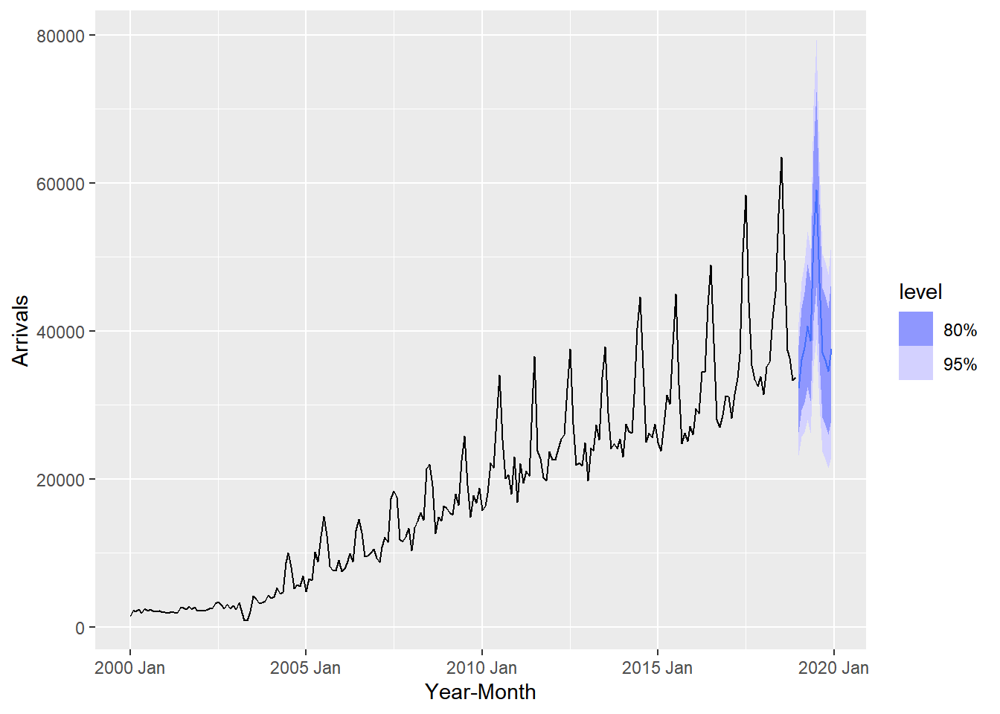
7.13 Visualising AutoETS model with ggplot2
There are time that we are interested to visualise relationship between training data and fit data and forecasted values versus the hold-out data.
fc_autoETS <- fit_autoETS %>%
forecast(h = "12 months")
vietnam_ts %>%
ggplot(aes(x=`Year-Month`,
y=Arrivals)) +
autolayer(fc_autoETS,
alpha = 0.6) +
geom_line(aes(
color = Type),
alpha = 0.8) +
geom_line(aes(
y = .mean,
colour = "Forecast"),
data = fc_autoETS) +
geom_line(aes(
y = .fitted,
colour = "Fitted"),
data = augment(fit_autoETS))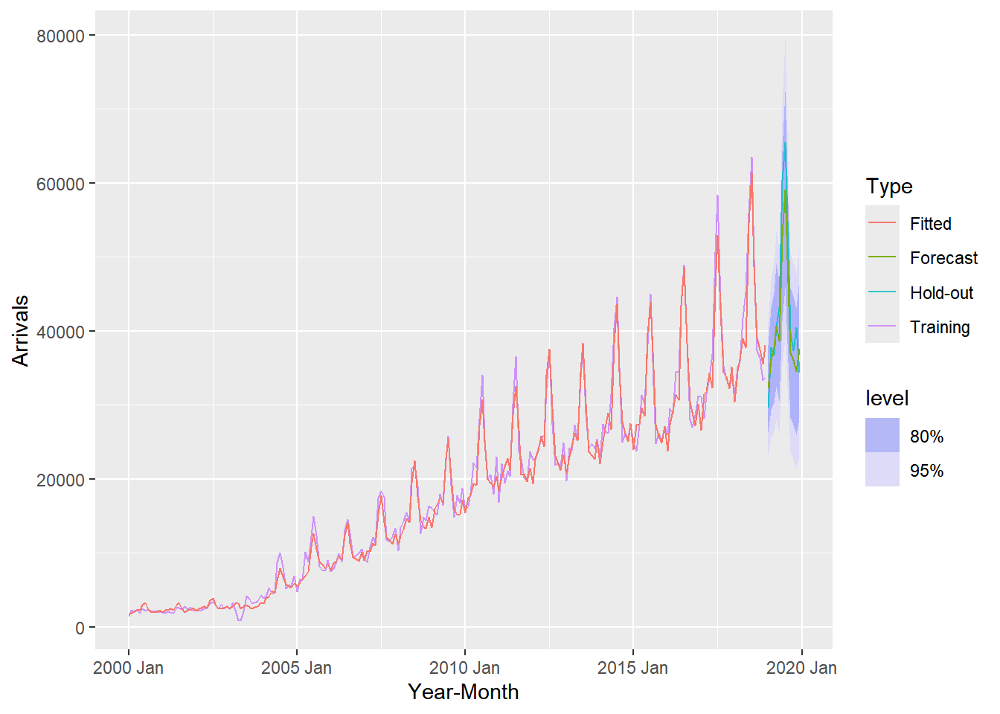
8 AutoRegressive Integrated Moving Average(ARIMA) Methods for Time Series Forecasting: fable (tidyverts) methods
8.1 Visualising Autocorrelations: feasts methods
feasts package provides a very handy function for visualising ACF and PACF of a time series called gg_tsdiaply().
vietnam_train %>%
gg_tsdisplay(plot_type='partial')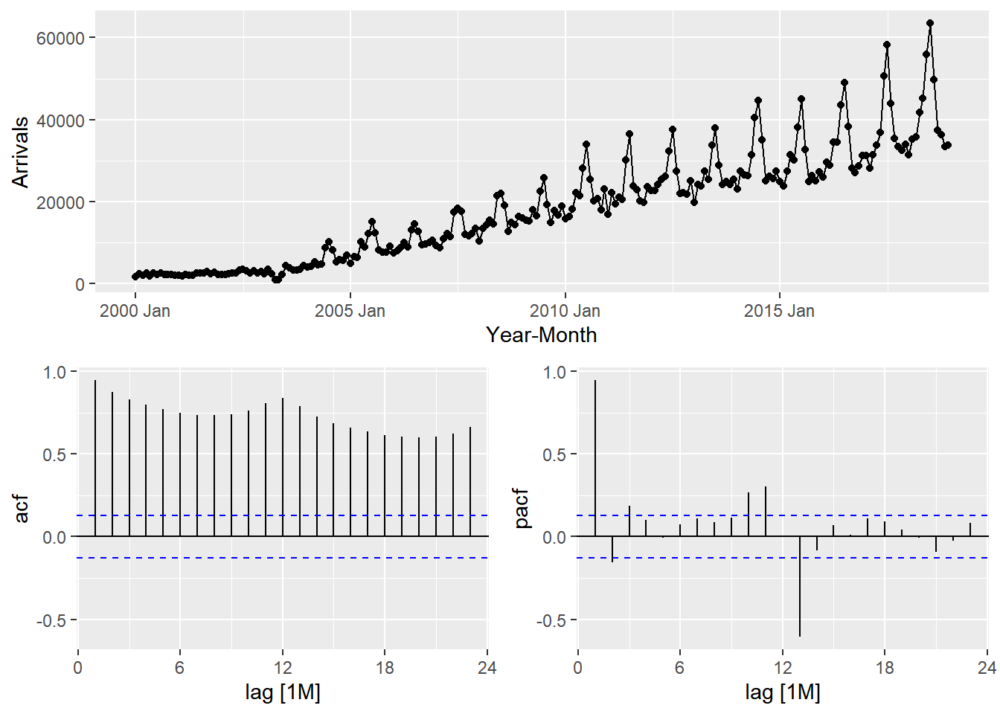
9 NOTE
We can begin with horizon plot (ggHoriPlot), time plot, seasonal plot and STL decomposition, ACF and PACF from feasts for time series EDA, After exploratory analysis, we conduct clustering to group CPI components by behaviour (seasonal, trendy, and volatile). Then confirmatory analysis is conducted to statistically validate the observed patterns.
Next, we start modelling with fable and then extend to fable.prophet. Prophet can be viewed as a hybrid approach: it incorporates automated and flexible modelling techniques that resemble machine learning, but it is still fundamentally a regression based time series model rather than a pure machine learning algorithm. After that, we can further extend to machine learning workflows using timetk and modeltime as a benchmark for verification and confirmation of the forecasting results. In the take-home exercise, we will focus on exploring these methods first, and then design the dashboard. For the dashboard, we can use tsibblecrosstalk to build coordinated views across plots and tables, which enhances interactivity and supports clearer visual comparisons.
EDA
horizon plot
time plot
seasonal plot
STL decomposition
ACF/PACF plots (initial diagnosis of trend and seasonality) (ACF() and FACF() + autoplot, feat_acf() and feat_pacf())
Clustering
- feature based clustering (feasts)
CDA (confirmation)
seasonal strength test SARIMA, feat_stl()
ARIMA seasonal terms
regression & ANOVA across components
Forecasting
fable ((ETS / ARIMA / SARIMA))
fable.prophet (hybrid)
timetk + modeltime (ML benchmark)
Dashboard
- tsibblecrosstalk coordinated views
10 Reference
Kam, Tin Seong (2026), 19 Visualising, Analysing and Forecasting Time-series Data: tidyverts methods, https://r4va.netlify.app/chap19